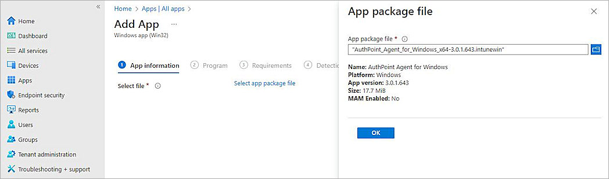

Microsoft Intune is a cloud-based endpoint management tool that organizations can use to manage users and devices. The Intune Company Portal app enables members of an organization to download and install organization-approved apps.
This document describes how to configure Microsoft Intune to make the AuthPoint Logon app for Windows available to devices in your organization through the Company Portal.
Contents
Integration Summary
The hardware and software used in this guide include:
- Microsoft Intune
- Logon app for Windows v3.0.1.643
Before You Begin
Before you begin these procedures, make sure that you:
- Download the AuthPoint Logon app for Windows installer and configuration file. For more information, go to Download and Install the Logon App.
- Have a global administrator or user management administrator account to log in to Microsoft Intune.
- Create a user in Microsoft Intune or synchronize an on-premises Active Directory user to Microsoft Entra ID and assign the user an Intune Plan 1 license.
- Download the Microsoft Win32 Content Prep Tool from GitHub as a .ZIP file and extract the contents to your computer.
- Enroll your Windows devices in Microsoft Intune.
Configure Microsoft Intune
To configure Microsoft Intune, you must:
Create an .intunewin File
To add the Logon app as an app in Microsoft Intune, you must first use the Microsoft Win32 Content Prep Tool to convert the Logon app installer to the .intunewin format.
To create an .intunewin file:
- On your computer, create a new folder and copy the AuthPoint Logon App installer and configuration file to the folder. In our example, we name the folder Logon App.
- Create a new folder for the output. This is the folder where the .intunewin file is created when the process completes. In our example, we name the folder Logon App Output.
- From a Command Prompt window, go to the folder you extracted the contents of the Microsoft Win32 Content Prep Tool .ZIP file to.
- Run the IntuneWinAppUtil.exe file with no parameters.
- Type the path of the source folder you created in Step 1. In our example, we type:
C:\Users\<username>\Documents\Logon App - Press Enter.
- Type the file name of the AuthPoint Logon app installer. In our example, we type:
AuthPoint_Agent_for_Windows_x64-3.0.1.643.msi - Press Enter.
- Type the path of the output folder you created in Step 2. In our example, we type:
C:\Users\<username>\Documents\Logon App Output - Press Enter.
- Type N.
- Press Enter.
The .intunewin file is created in the output folder.

Add a Group in Microsoft Intune
When you add the Logon app as an app in Microsoft Intune in the next section, you can assign the app to user groups. Create a group of users that you want to assign the Logon app to.
To add a group in Microsoft Intune:
- Log in to Microsoft Intune as an administrator.
- Select Groups > All Groups > New Group.
The New Group page opens. - In the Group Name text box, type a group name.
- Click No Members Selected.
- Select the users you want to assign the Logon app to, then click Select.
- Keep the default values for all other settings.

- Click Create.
The group is created in Microsoft Intune.
Add the App in Microsoft Intune
When you add an app to Intune, you define the details shown for the app in Company Portal and configure settings such as device requirements, detection rules, and user assignments.
To add the Logon app as an app in Microsoft Intune:
- Log in to Microsoft Intune as an administrator.
- Select Apps > All Apps > Add.
The Select App Type page opens. - From the App Type drop-down list, select Windows App (Win32).

- Click Select.
The Add App page opens. - Click Select App Package File.
The App Package File page opens. - From the App Package File drop-down list, select the .intunewin file you created in Create an .intunewin File.

- Click OK.
The Add App page opens with additional tabs. - On the App Information page, in the Publisher text box, type a name. In our example, we type AuthPoint Agent for Windows.
- Click Next.
The Program page opens. - From the Device Restart Behavior drop-down list, select Intune Will Force a Mandatory Device Restart.
- Click Next.
The Requirements page opens. - From the Operating System Architecture drop-down list, select one or more operating system architectures, depending on the devices used at your organization. In our example, we select 64-bit.
- From the Minimum Operating System drop-down list, select the minimum operating system used at your organization. In our example, we select Windows 10 1607.

- Click Next.
The Detection Rules page opens. - From the Rules Format drop-down list, select Manually Configure Detection Rules.
- Click Add.
The Detection Rule page opens. - From the Rule Type drop-down list, select File.
- In the Path text box, type:
C:\Windows\System32\ - In the File or Folder text box, type:
wlconfig.cfg - From the Detection Method drop-down list, select File or Folder Exists.
- Click OK.
- To open the Assignments page, click Next three times.
- On the Assignments page, select an assignment type. In our example, we select Add Group from the Available For Enrolled Devices section.
- Select the group you created in Add a Group in Microsoft Intune, then click Select.
- Click Next.
- Click Create.
The Intune package uploads.
Configure AuthPoint
For information on how to add a Logon app resource and download the Logon app installer and configuration file, go to Configure MFA for a Computer or Server.
To configure AuthPoint, you must:
Add a Group in AuthPoint
You must have at least one user group in AuthPoint to configure MFA. If you already have a group, you do not have to add another group.
To add a WatchGuard Cloud-hosted group to the WatchGuard Cloud Directory:
- Go to Configure > Directories and Domain Services.
- Click the WatchGuard Cloud Directory domain name. If you have not yet added the WatchGuard Cloud Directory, click Add Authentication Domain and select the WatchGuard Cloud Directory.
The New Group page appears.

- In the Groups tab, click Add Group.
- In the Group Name text box, type a descriptive name for the group.
- (Optional) In the Description text box, type a description of the group.

- Click Save.
Your group is added to the WatchGuard Cloud Directory and to AuthPoint.
Add an Authentication Policy in AuthPoint
Authentication policies specify which resources users can authenticate to and which authentication methods they can use (Push, QR code, and OTP).
You must have at least one authentication policy in AuthPoint that includes the Logon app resource. If you already have authentication policies, you do not have to create a new authentication policy. You can add this resource to your existing authentication policies.
Users that do not have an authentication policy for a specific resource cannot authenticate to log in to that resource.
To configure an authentication policy:
- From the navigation menu, select Authentication Policies.
- Click Add Policy.

- Type a name for this policy.
- From the Select the Authentication Options drop-down list, select Authentication Options and select which authentication options users can choose from when they authenticate.
For SAML resources, if you select more than one authentication option, users must select one of the available options when they authenticate. For example, if you select OTP and Push, users can choose to type their OTP or approve a push to authenticate. You cannot require that they do both.

- Select which groups this policy applies to. You can select more than one group. To configure this policy to apply to all groups, select All Groups.
- Select the resource that you created in the previous section. If you want this policy to apply to additional resources, select each resource this policy applies to. To configure this policy to apply to all resources, select All Resources.

-
(Optional) If you have configured policy objects such as a Network Location, select which policy objects apply to this policy. When you add a policy object to a policy, the policy only applies to user authentications that are the same as the conditions of the policy objects. For example, if you add a Network Location to a policy, the policy only applies to user authentications that come from that Network Location. Users who only have a policy that includes a Network Location do not get access to the resource when they authenticate outside of that Network Location (because they do not have a policy that applies, not because authentication is denied).
If you configure policy objects, we recommend that you create a second policy for the same groups and resources without the policy objects. The policy with the policy objects should have a higher priority.

- Click Save.
Your policy is created and added to the end of the policy list.When you create a new policy, we recommend that you review the order of your policies. AuthPoint always adds new policies to the end of the policy list.

Add Users in AuthPoint
Before you assign users to a group, you must add the users to AuthPoint. There are two ways to add AuthPoint user accounts:
- Sync users from an external user database
- Add WatchGuard Cloud-hosted AuthPoint users
Each user must be a member of a group. You must add at least one group before you can add users to AuthPoint.
To import users from Active Directory, Microsoft Entra ID, or an LDAP database, you must add an external identity in the AuthPoint management UI. External identities connect to user databases to get user account information and validate passwords.
- To sync users from Active Directory or an LDAP database, you must add an LDAP external identity
- To sync users from Microsoft Entra ID, you must add a Microsoft Entra ID external identity
When you sync users from an external user database, you can sync any number of users and they are all added to AuthPoint at one time. Users synced from an external user database use the password defined for their user account as their AuthPoint password.
To learn how to sync users, go to Sync Users from Active Directory or LDAP and Sync Users from Azure Active Directory.
You create WatchGuard Cloud-hosted users and groups from the WatchGuard Cloud Directory in WatchGuard Cloud. Directories and Domain Services is where you add shared authentication domains for WatchGuard Cloud devices and services, such as AuthPoint.
Users that you add to the WatchGuard Cloud Directory are automatically added to AuthPoint as well.
You add local AuthPoint users form Directories and Domain Services. You manage the users in AuthPoint on the Users page.
When you add WatchGuard Cloud-hosted AuthPoint users, you choose whether the user is an MFA user or a non-MFA user.
- MFA users are user accounts that will use AuthPoint multi-factor authentication to authenticate. This is not related to the AuthPoint Multi-Factor Authentication license type.
- Non-MFA users are users that will only ever authenticate with a password, such as a service account user. Non-MFA users do not consume an AuthPoint user license and cannot authenticate to resources that require MFA. They can only authenticate to protected resources if the non-MFA user account has a password only authentication policy for that resource.
After you add a user, you can edit the user account if you need to change their account type. When you change a user account from MFA to non-MFA, AuthPoint deletes the tokens and password vault (if applicable) that belong to the user. This action cannot be undone.
Unlike users synced from an external user database, WatchGuard Cloud-hosted AuthPoint users define and manage their own AuthPoint password. When you add a WatchGuard Cloud-hosted user account, the user receives an email that prompts them to set their password.
To learn how to add WatchGuard Cloud-hosted AuthPoint user accounts to the WatchGuard Cloud Directory, go to Add Local Users to an Authentication Domain.
Test the Integration
To test the integration:
- On your Windows device, install the Company Portal from the Microsoft Store.
- Open the Company Portal and log in with the Microsoft Entra ID user.

- Select the published app, then click Install.
Wait a few moments. After the installation completes, the computer restarts. - Log in to the Windows device with the user credentials.
- Authenticate with AuthPoint MFA.